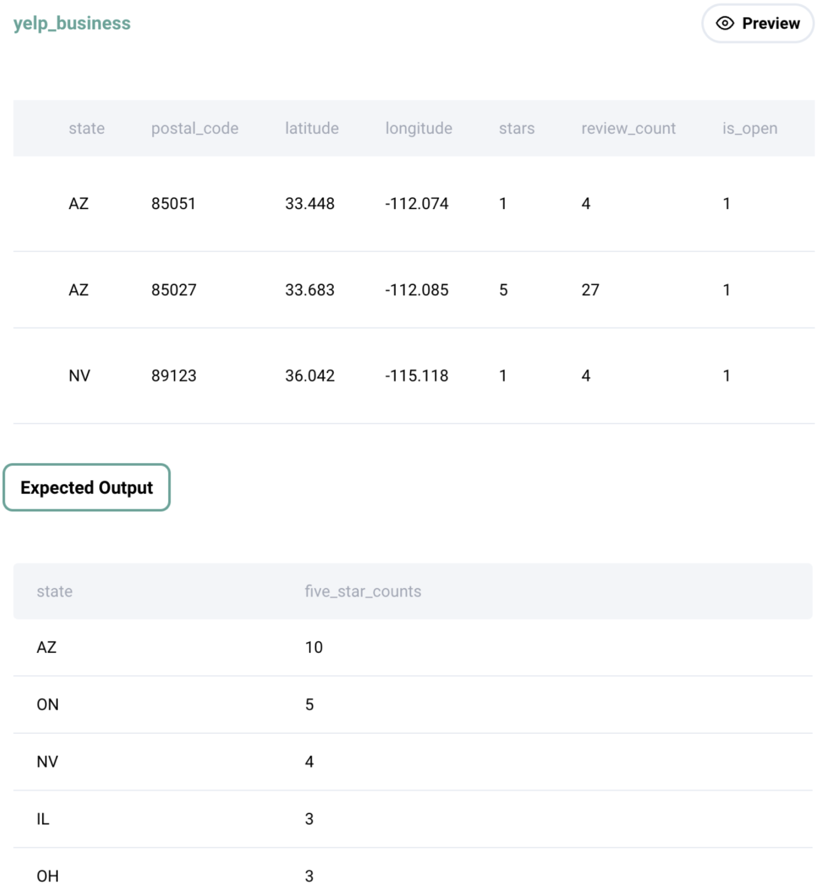

Question sourced from StrataScratch.com.
Database: MySQL
Find the top 5 states with the most 5 star businesses. Output the state name along with the number of 5-star businesses and order records by the number of 5-star businesses in descending order. In case there are ties in the number of businesses, return all the unique states. If two states have the same result, sort them in alphabetical order.

/*
My strategy: Filter the yelp_business table to keep only the 5-star
businesses. Group by state and count the total number of 5-star
businesses per state. Use the RANK window function to rank the states
by total number of 5-star businesses (with rank 1 being the most
businesses). Since the question only mentions returning five states
at minimum, with the potential of more in case of ties, the RANK
window function is used (i.e. rank numbers are skipped in case of
ties), and only rows with a rank <= 5 are kept. If the question
explicitly asked for the states in rank positions 1, 2, 3, 4, & 5,
then DENSE_RANK would be more appropriate (because it assigns
consecutive rank numbers without leaving gaps in case of ties).
*/
WITH ranks AS (
SELECT state, COUNT(*) AS five_star_counts,
RANK() OVER(ORDER BY COUNT(*) DESC) AS state_rank
FROM yelp_business
WHERE stars = 5
GROUP BY state
ORDER BY state
)
SELECT state, five_star_counts
FROM ranks
WHERE state_rank <= 5;